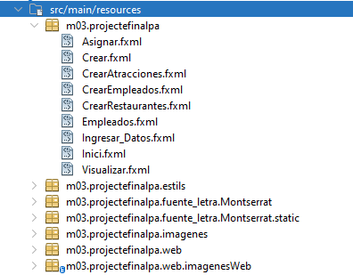

DOCUMENTACIÓN DEL PROYECTO
CONTEXTUALIZACIÓN
La aplicación ha sido desarrollada para facilitar la gestión de los horarios de los trabajadores del parque de atracciones Port Aventura para así dar solución a una necesidad del departamento de RRHH. El parque cuenta con diferentes zonas de trabajo clasificadas en dos tipos: atracciones y restaurantes. Todos los empleados están bajo la supervisión de RRHH, que necesita conocer datos básicos como el nombre del empleado, el correo electrónico, telefóno, clasificación del empleado y otros datos de interés.
Para gestionar los horarios, la aplicación permite la introducción de fechas y horas de entrada y salida que serán asignadas a una zona. Estos horarios pueden ser realizados por uno o varios empleados y tendrán una única zona asignada. Las zonas podrán tener muchos horarios asignados para cubrir todos los turnos que hay que realizar en esa área. De esta forma, los empleados de las diferentes zonas podrán visualizar sus horarios asignados.
Los responsables de cada área podrán asignar y modificar los horarios de su plantilla, así como añadir nuevos horarios y visualizarlos para así poder tener una visión completa de la planificación del parque.
BASE DE DATOS
Diagrama entidad-relación
Después de saber las necesidades del cliente, se presenta el diagrama de entidad relación.

Esquema lógico relacional
ATRACCION(nombre, descripción, tipo, alturaminima, ubicacion)
RESTAURANTE(nombre, tipoComida, ubicacion, descripción)
EMPLEADO(dni, nombre, direccion, telefono, email, categoría, foto)
HORARIO(id, fecha_inicio, fecha_fina, nombreAtr, nombreRes)
HORARIO.nombreRes es la clave aliena a RESTAURANTE.
HORARIO.nombreAtr es la clave aliena a ATRACCION
ASIGNACION(idHorario, idniEmpleado)
ASIGNACION.idHorario es la clave aliena a HORARIO.
ASIGNACION.dniEmpleado es la clave aliena a ATRACCION.
Enlace base de datos
Clica encima de la imagen para descargarte la base de datos para poderla importar en mySQL.
MODELO-VISTA-CONTROLADOR
Diagrama UML
Para crear el patrón MVC en mi proyecto, he organizado las diferentes partes de la siguiente manera:
En el modelo, he incluido todas las clases que tienen conexión a la base de datos MySQL. Las he nombrado de acuerdo al controlador correspondiente para facilitar su localización. Además, he creado una carpeta llamada "clases" para incluir cada clase-objeto que se ha derivado del diagrama UML. En esta sección, me gustaría destacar que he creado una clase llamada "Zona" que tiene dos subclases: "Atracción" y "Restaurante". Estas subclases no existen en el diagrama UML ni en la base de datos, pero me han ayudado a agrupar estos dos objetos de manera lógica. Adjunto una imagen que muestra la estructura de organización.

En el controlador, he creado controladores individuales para cada vista de la aplicación. Cada clase controladora tiene el mismo nombre que su vista asociada.
Las vistas están ubicadas en la carpeta "resources", junto con las imágenes, los estilos CSS y una página web que he creado como manual de la aplicación.
RESOLUCIÓN DE PROBLEMAS
Durante el proceso del desarrollo de la aplicación se me han presentado diversos desafíos técnicos. Uno de los retos más importantes ha sido la elección y uso adecuado de los controles, como la implementación de especificaciones en CSS para la estética final de la app. Además, uno de los controles que quise incorporar y al final no realicé fue la implementación de un spinner para las horas y minutos, que después de muchas pruebas fue imposible incluirlo, incluso al haber implementado el código correctamente.
Al principio, las relaciones de 1-N y N-M resultaron difíciles de implementar. Trabajé con dos claves foráneas en la tabla de horarios debido a una estructura incorrecta en la base de datos. Generé dos tablas (Atracciones y Restaurantes) que deberían haber sido subordinadas a la tabla Zona, la cual finalmente no incorporé. Como solución, tuve que crear una clase llamada Zona para integrar todos los datos en un solo objeto de zona al consultar los horarios de un empleado. De esta manera pude recopilar una lista, dentro del objeto Empleado, que contenía una lista de horarios, donde cada horario también incluía un objeto de zona. Luego, para evitar duplicación de horarios y garantizar que un empleado no pudiera trabajar en el mismo horario varias veces, tuve que crear dos (triggers) que resolvieron todo el proceso de introducción de datos. Sin embargo, tuve que modificar varias veces el trigger relacionado con los horarios ya realizados, ya que deseaba permitir que un empleado trabajara de 9:00 a 10:00 y también de 10:00 a 11:00, lo cual generaba conflictos debido a que el trigger también comparaba la fecha de salida y entrada.
Otra dificultad fue trabajar con el formato de fecha de DateTime de MySQL, ya que es un tipo de dato que incluye (fecha + horas + minutos). Tuve que buscar diferentes clases para convertir el LocalDate, del control de datePicker, a un formato válido para MySQL. Como también tenía que comparar fechas, tuve que buscar métodos para introducir horas y minutos de forma automática, para iniciar el día y finalizar el día para comparar con una fecha completa.
Trabajar con imágenes también ha sido dificultoso, ya que desde el controlador era imposible hacer las conversiones desde BLOB a Image y al revés, y al final encontré una solución y era convertir las imagenes desde el "modelo" en la conexión hacía la BDD. De esta forma la conversión se hacía desde la conexión y directamente construía el objeto empleado con la imagen de tipo Image. También fue tedioso encontrar la forma de solo subir imágenes 'JPG', ya que en otros formatos no se subía correctamente.
Por otro lado, el control de errores ha sido crucial durante todo el desarrollo, para mí era la parte que menos había trabajado y a medida que iba creciendo el proyecto iba viendo diferentes formas de controlar hasta que al final he ido mejorando la forma de estructurarlas. He intentado separar el código con funciones de comparación tanto para la longitud de caracteres de cada campo, como para comprobar que el texto fuera de tipo numérico. También he utilizado para los CRUDS variables constantes para así poder modificar fácilmente las longitudes de entrada de datos, en caso de que en un futuro se necesitaran modificar estos campos. De esta forma se ve más limpio y entendible. También debido a que MySQL lanza mensajes personalizados con los triggers, decidí que en vez de devolver un booleano al hacer la correcta introducción o modificación de datos, devolviera los diferentes mensajes que yo había creado y de esta forma fuera más personificado de cara al usuario.
En conclusión puedo decir que estoy muy satisfecho de mi primer proyecto profesional y que intentaré volver a realizarlo en un futuro con esos pequeños cambios para poder mejorar la integración de datos y así tenerlo en mi portafolio como programador.